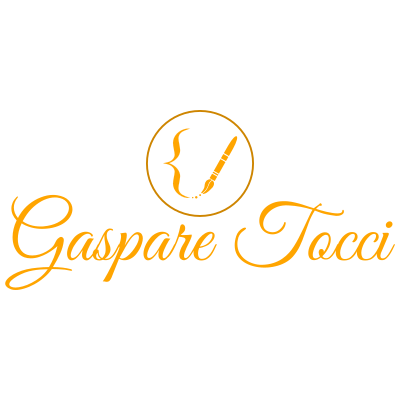
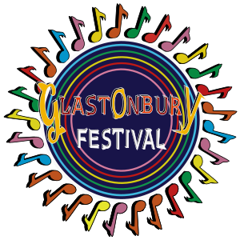

WADA Solutions
This branding project includes a logo, business card, and calendar created for a backend developer. It reflects my early exploration of branding and visual identity design.
Click to viewThis branding project includes a logo, business card, and calendar created for a backend developer. It reflects my early exploration of branding and visual identity design.
Click to viewDesigned for a streamer, making social networks easily accessible. Explored vector graphics and stitched visuals.
Click to viewFirst real project creating a logo and website for a plumbing & heating company. Learned to work without wireframes.
Click to view
My first portfolio where I explored 3D modeling, graphic design, and coding. It showcases my early experiments with Blender and GIMP, reflecting my curiosity, initiative, and foundation in digital creation.
Click to view
Bootcamp project recreating the Glastonbury Festival homepage with my own design enhancements. Included wireframes, Figma mockups, and a functional website.
Click to viewPresentation created for the Glastonbury Festival website project, showcasing the homepage design, visual layout, project structure, and key features developed during the GetSetUK Bootcamp.
Click to view